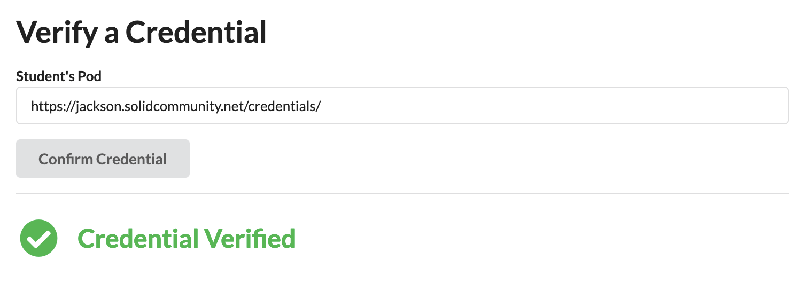
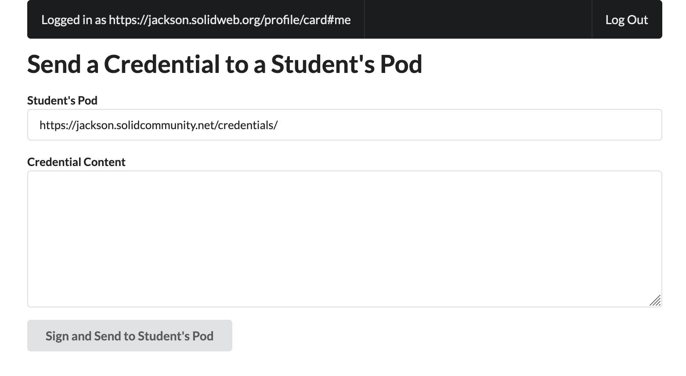

Friday was "Fry Day," but we'll get into that later
On Friday I finally did enough digging to find the actual specification I needed: The Credentials Handler API spec. And it's beautiful (compared to some of the other specifications I was reading). It's well defined and has a reference implementation. So, I'll be following CHAPI at least for the near future to store keys and credentials. One of the problems with not being in the working group is that I don't have the insider information of where things are going. There's a bunch that's published, but I'm not sure if it's being actively worked on or if it's dead. So that means, maybe CHAPI isn't the way the community is going. But, it's the clearest method of certificate storage I see right now, so I'm running with it. It might behoove me to join the Digital Certification working group especially given I can't seem to get in contact with Dmitri lately. I hope he's doing well.
After work, Ailin and I went to get Fries and Fried ice cream. In between we bought some non-alcoholic liquor which turned out to be quite nasty. To me it tasted like beet juice (despite it being labeled as strawberry flavor)
Saturday was the beginning of moving day. I started to pack up a few things, but then got distracted. Too distracted. I woke up to a message from James saying that the new season of Hermitcraft is coming out, and I caved to my nostalgia. I've been watching way too much Minecraft stuff lately. It's something that I need to curb.
Anyway, We needed more boxes from trader Joes and I picked up a massive one which potentially was able to save us a lot of money since the company we're using to ship boxes charges by the box.
In the evening, I started to think about the meeting I have with Didier and Matt. I still don't know too much about it, but whatever happens, it would be great if I could have a demo to show them what a verifiable credential system on Solid looks like. So, I have about a day (given I'll be distracted with packing too) to build a small demo. In this demo, a teacher will be able to sign a credential using keys stored in a CHAPI compatible wallet. The credential will go to the Student's Pod where it can be given to a company to verify it. There are three parts here: the teacher, the student, and the company. I need to build a demo UI for the teacher and company since the student is just represented by a Pod and Pods already exist.
So, I put together the initial wireframe for the application and set up log in with Solid. Tomorrow, I'll work on signing the certification, and finally on Monday I'll work on verifying the certification.
 Much of Sunday was spent doing a final packing job on the boxes. In total we have 10 boxes which is three more than we had last time when we came to New York. I don't think we got too much more stuff. I just think the boxes I got from Trader Joes were smaller than the boxes that we had before. Oh well.
In the evening, I worked on the GT demo, but didn't make too much progress. I had trouble adopting the cryptography.
Monday was a "hackathon day" to finish the demo for Georgia Tech. And in true hackathon tradtion, I boulght some Doctor Pepper and Sausage Pizza (this time with stuffed crusts). While the demo was supposed to be simple, it still took a long time to develop because of problems with Pod sessions. NSS still isn't the most stable product and it would keep forgetting sessions or overwriting sessions. But, after finaggling with that for hours, I finally completed the demo. It felt good knowing that I would be going into the meeting with something to show off. Even if it's really simple, it will show Didier and Matt that I care about the problem and I'm able to handle it. I cut a few corners when making the demo. Most notably, I hard coded the private key in the application because I couldn't figure out a simple way to get a private key into CHAPI using the present tools available. But, it's a good proof of concept.
I did still get distracted, again by some unproductive things, but I did start thinking about something else. Once I'm done with StarJump and Rebecca's First Roadtrip, I'd love to write a high fantasy novel, and I started thinking about world building. Specifically the continents. Designing a world starts with designing the tectonic plates and I started thinking about how our planet has two levels of plates: Oceanic and Continental. But, what if this fantasy world had more than two layers. What if there were many layers that went down to the core. Then I started thinking about lore. What if the planet was continually added to with the younger layers on the top and the older layers below?
I think it would be cool to have short books (50k words) focusing on people living on different layers and parts of the world. In the final book of the series, they'd all come together to fight the gods at the center of the world. I also toyed around with a magic system. There are 5 kinds of magic: Motion, Temperature, Composition, Light, and Soul.
When I woke up, I started outlining everything I wanted to talk about at the meeting as well as open questions. The meeting went fantastically. Both Didier and Matt seemed really open to a Solid integration for their Credentials System. They seemed ambivalent to Flur.ee. It seems like the deal with Flur.ee was a different department. So, I guess the fact that GT already signed a deal isn't as big of a problem as I originally thought. It's more just a problem for raising money from Thiago specifically because they invested in Flur.ee. So, if it comes to raising money from VCs, I'll try Thiago again, but I might need to look elsewhere. I'll try Atlanta at first, but I may need to look into my SF VC network as well. But, we discussed other funding options too including leveraging grants or a philanthropic donation GT recently received to do research into Verifiable Credentials. Finally, there are a few more people I need to meet: the head of the Digital Credentials Consortium and the CSO of Arizon State University.
After a great meeting, I found there were three things I could work on: Star Jump, WarmIntro.cc (or the underlying credential infrastructure), or the Solid Dev Tools. Each one (except for Star Jump) is needed for an eventual GT project, so I roleld a random number generator and it chose to work on the Solid Dev Tools. At the time of writing this, I'm working on upgrading the dev tools to a new version of ShexJS.
The boxes were also picked up by FedEx leaving only the task of giving away our furniture. I'm feeling pretty good going into the move.